보배님 매장 촬영 가이드 — 성수
아래 5구간을 순서 그대로 찍으시면 됩니다. 카드마다 영상이 바로 재생되니 눌러서 확인해 주세요.
결론 한 장
제품부츠(택3)
착장갈아입기 없음
러닝타임36초 안팎
구간5구간
매장성수 플래그십
업로드10/12
이 영상이 하는 말 한 줄
"부츠 하나로 무드·길이가 바뀌고, 통굽인데 편하고, 매장에서 직접 신어봤다."
플로우는 아래 5구간 순서 그대로- ① 훅 — 거울 셀카+타이틀 → 매장 스침 2컷 → 피팅거울 2컷 → 부츠 하이앵글
- ② 매장 소개 — 외관+주소 자막 → 1층 쇼룸/지하 구조
- ③ 신발 고르기 — 매대 하이앵글·얼굴 셀카 → 손 클로즈업
- ④ 착장 — 거울 셀카 4컷, 부츠만 갈아신으며 자세 4종
- ⑤ 클로징 — 진열대 와이드 → 쇼핑백 손 → 거울 전신 → 쇼핑백 마무리+가격 자막
영상 흐름 (초 단위)
전체 36초 안팎, 컷당 1초 안팎.
| 구간 | 초 | 컷 | 보여야 하는 것 |
|---|
| 훅 | 0–3.7s | ① | 거울 전신 셀카 + 타이틀 자막 → 매장 스침 2컷 → 피팅거울 2컷 → 부츠 하이앵글 |
| 매장 소개 | 3.7–10s | ② | 외관+주소 자막 → 1층 쇼룸/지하 구조 컷 |
| 신발 고르기 | 10–17s | ③ | 하이앵글·얼굴 셀카 3컷 + 손 클로즈업 |
| 착장 | 17–30s | ④ | 거울 셀카 4컷, 같은 옷에 부츠만 갈아신기, 신발 보이는 자세 4종 |
| 클로징 | 30–36s | ⑤ | 진열대 와이드 → 쇼핑백 손 → 거울 전신 → 쇼핑백 마무리+가격 자막 |
촬영 필수컷 5
캡처 영상은 "이렇게 보이면 된다"의 기준입니다. 배경·옷·표정은 자유, 프레이밍과 흐름은 그대로 가져가 주시면 됩니다.
자막·나레이션 문구는 전부 예시입니다. 보배님 말투로 바꾸시되 첫 프레임부터 자막이 뜨는 것과 가격·굽 수치만 지켜 주세요.
참고 영상참고 영상
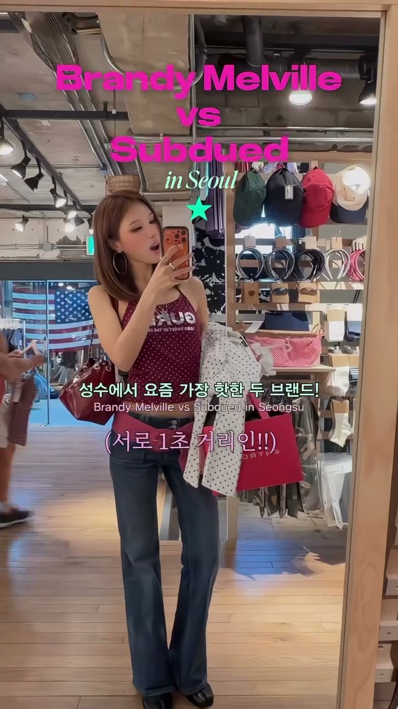
거울 셀카 + 타이틀 자막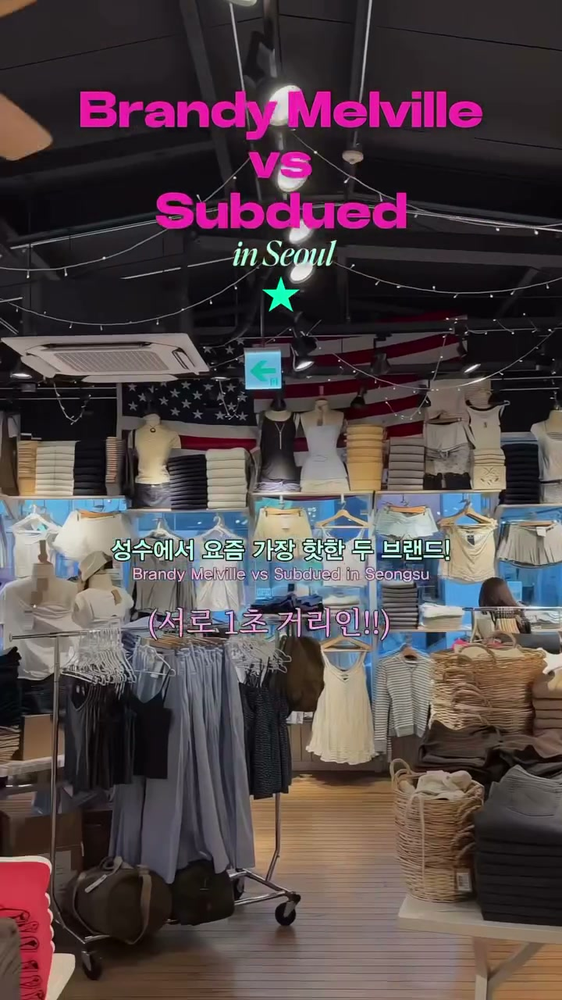
매장 스치는 컷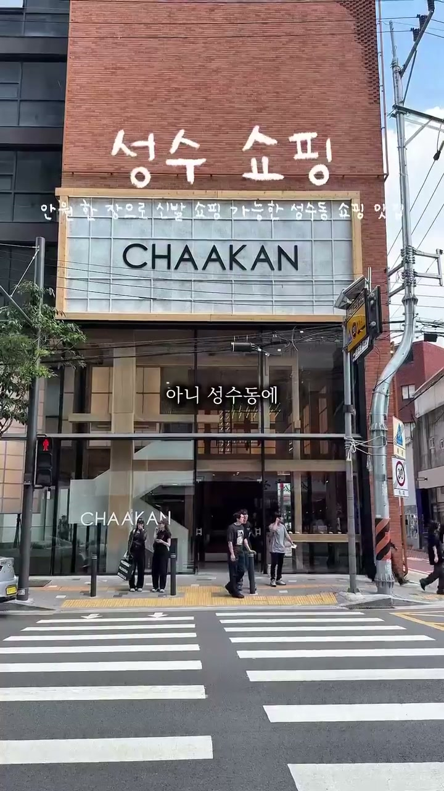
통창 외관
화면에 꼭 보여야 하는 것- 거울 셀카 + 첫 프레임부터 타이틀 자막
- 매장 스치는 컷 2장
- 피팅 거울 2컷
- 부츠를 손에 든 하이앵글 1컷
찍는 법거울 앞 전신 셀피로 시작 → 매장 안쪽을 스치듯 2컷 → 피팅 거울 앞에서 2컷 → 부츠 하나를 손에 들고 위에서 내려찍는 하이앵글로 마무리.
핸드헬드 · 전신→매장 스침→하이앵글 · 매장 거울 앞
자막 (예시)예) "성수에 이런 부츠 매장 생김" · "이 부츠 하나로 길이가 세 가지야"
참고 영상참고 영상참고 영상
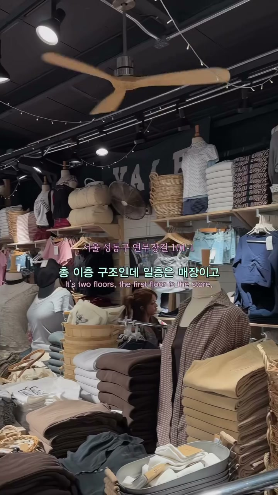
1층 쇼룸 구조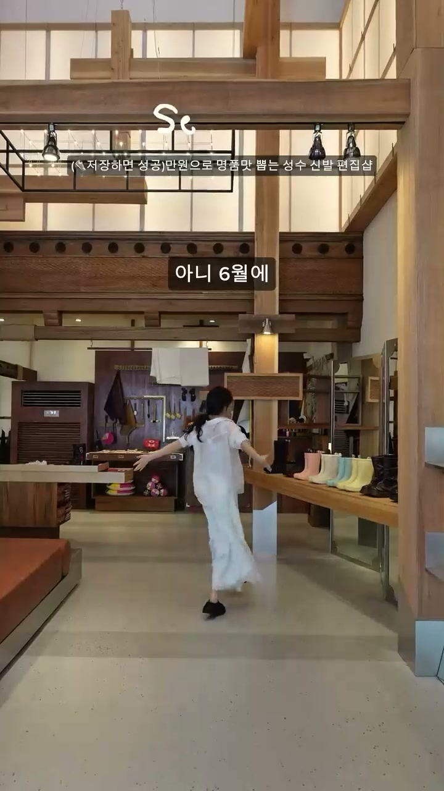
1층 쇼룸 내부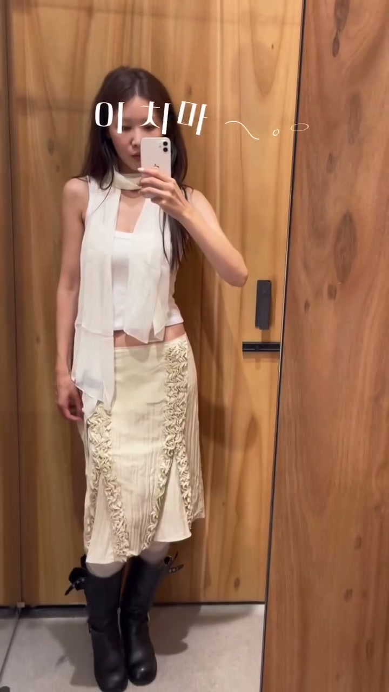
매장 내부 거울 반복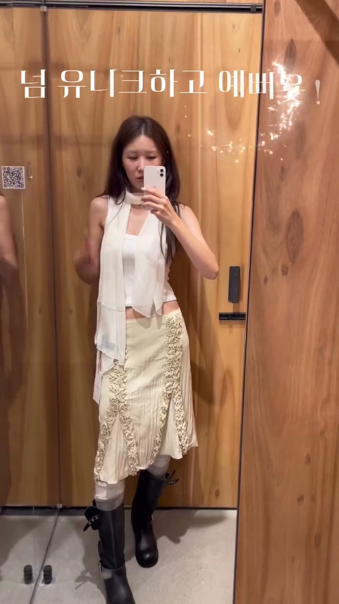
매장 내부 거울 반복 2
화면에 꼭 보여야 하는 것- 통창 외관 + 주소 자막
- 1층 쇼룸 전체감
- 지하 판매 공간으로 이어지는 동선
찍는 법외관 통창은 1~2초로 짧게 잡고 바로 입장 → 1층 쇼룸 전체감을 잡은 뒤 지하로 이어지는 동선까지.
핸드헬드 · 외관→입장→쇼룸 와이드 · 매장
자막 (예시)예) "여기 착한구두 성수점인데 매장부터 예뻐" · "성수이로 58"
참고 영상참고 영상참고 영상참고 영상
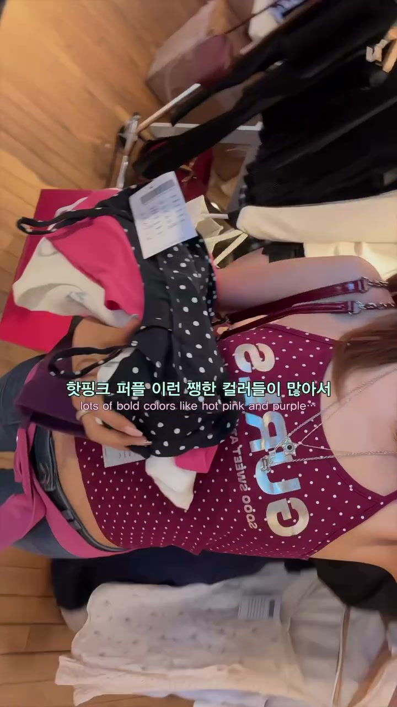
매대 훑는 하이앵글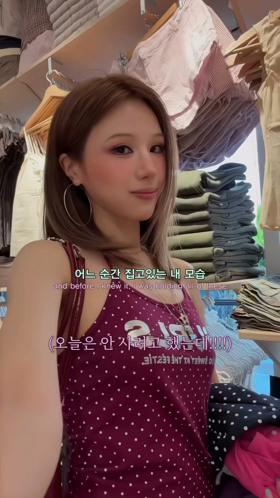
얼굴 리액션 클로즈업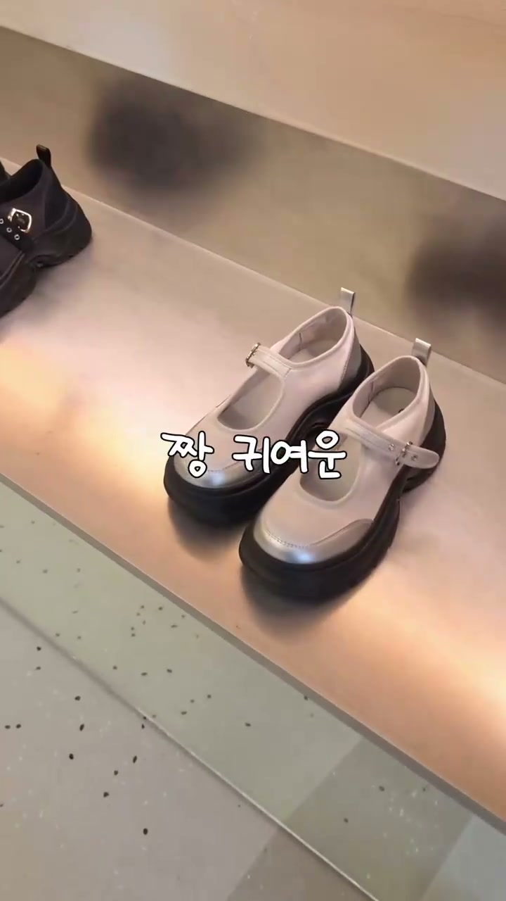
손으로 신발 집는 컷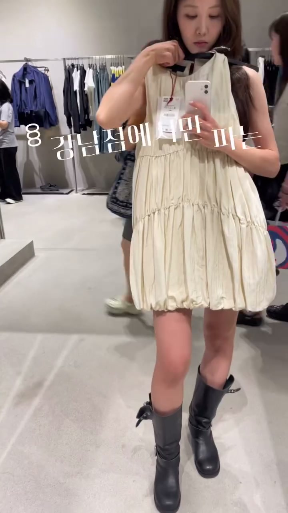
옷걸이째 들고 고르는 컷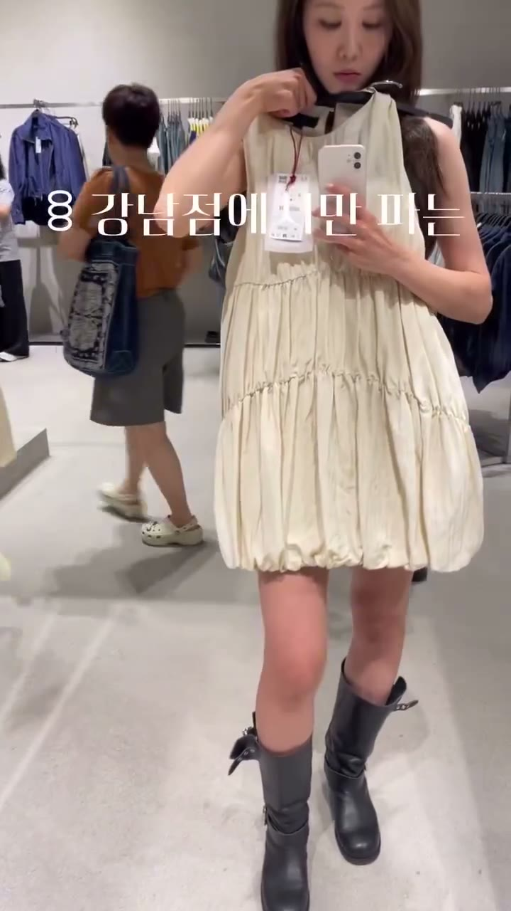
옷걸이째 대보기 2
화면에 꼭 보여야 하는 것- 매대를 훑는 하이앵글 1컷
- 얼굴 리액션 셀카
- 손으로 부츠 하나 집어 드는 클로즈업
- 부츠를 들고 몸 앞에 대보는 컷(선택)
찍는 법매대 앞에서 여러 부츠를 훑어보는 하이앵글 → 표정 리액션 → 마음에 드는 한 켤레를 손으로 집어 드는 클로즈업.
핸드헬드 · 하이앵글→얼굴 클로즈업→손 클로즈업 · 매장 매대
자막 (예시)예) "부츠 하나로 길이를 세 가지로 바꿀 수 있어"
④착장 — 신발 잘 보이는 자세
필수17–30초
참고 영상참고 영상참고 영상참고 영상
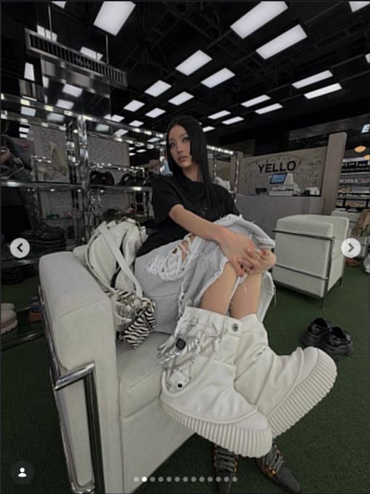
보배님 옐로슈즈 방문 컷 — 소파에 다리 접고 앉아 부츠 클로즈업, 이 자세 그대로 자세 1 — 앉아서 발 앞으로
자세 1 — 앉아서 발 앞으로 자세 2 — 다리 들기
자세 2 — 다리 들기 자세 3 — 한쪽 발 앞으로
자세 3 — 한쪽 발 앞으로 자세 4 — 발 틸트
자세 4 — 발 틸트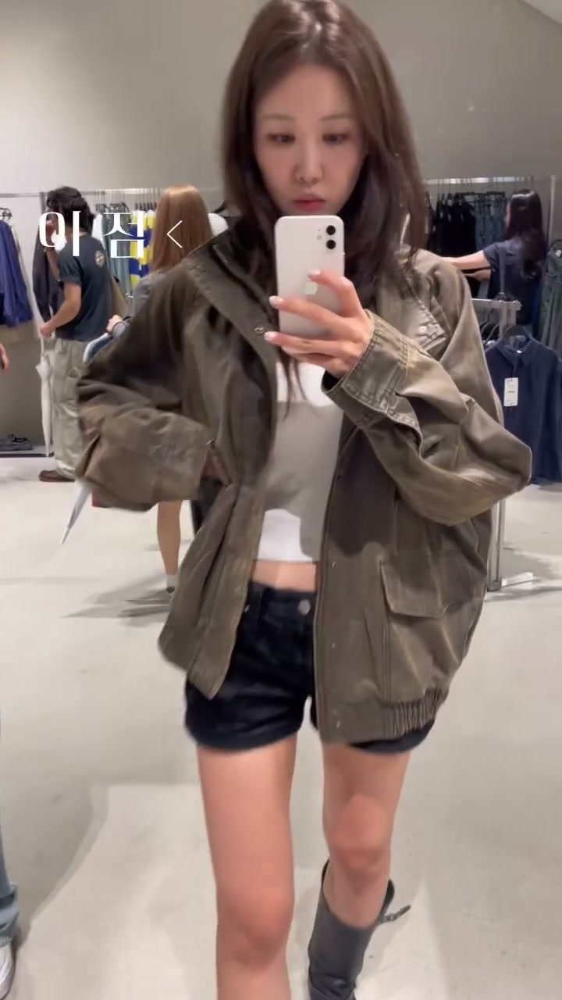
플로어 거울 셀피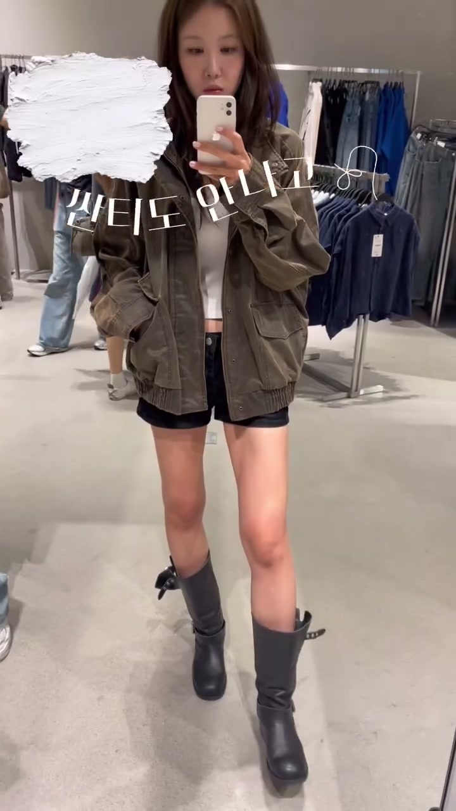
플로어 거울 셀피 반복(뒤에 진열대·손님)
화면에 꼭 보여야 하는 것- 거울 셀카 4컷, 같은 옷에 부츠만 갈아신기
- 매 컷 신발이 화면에 걸리는 각도
- 자세 4종: 앉아서 다리 접고 부츠 앞으로(본인 게시물 그대로) / 다리 들기 / 한쪽 발 앞으로 / 발 틸트
- 플로어 거울 셀피 반복(뒤에 진열대·손님)
찍는 법옷은 처음부터 끝까지 그대로 두고 부츠만 바꿔 신습니다. 거울 앞에서 자세 4종을 순서대로 잡고, 매번 발이 프레임 안에 확실히 걸리도록 각도를 확인하세요.
핸드헬드 · 거울 전신·자세 반복 · 매장 거울 앞
자막 (예시)예) "이거 한 켤레로 길이가 세 개야" · "통굽인데 굽 3cm라 하루 종일 편해"
참고 영상참고 영상
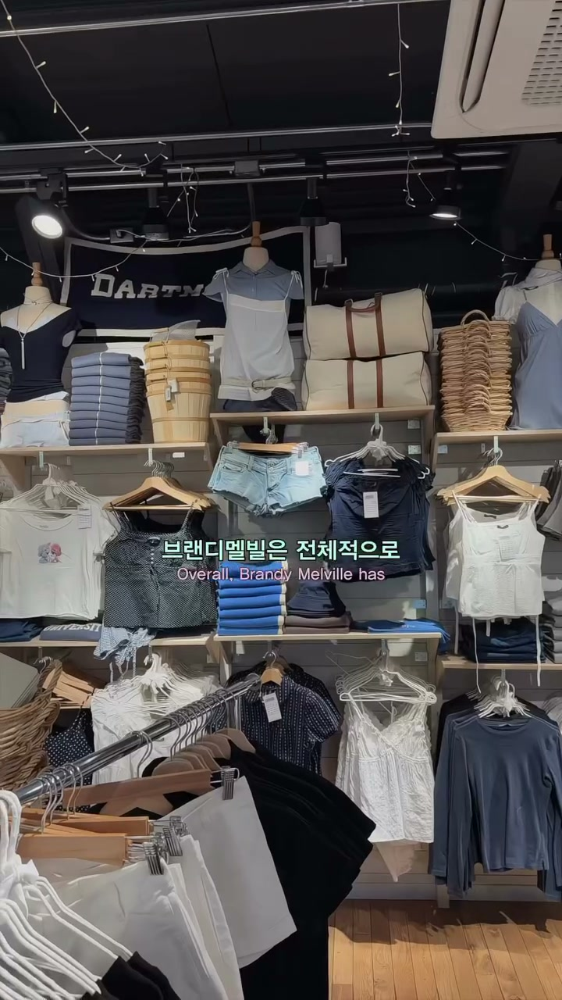
진열대 와이드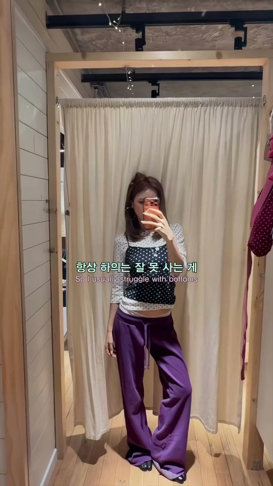
거울 전신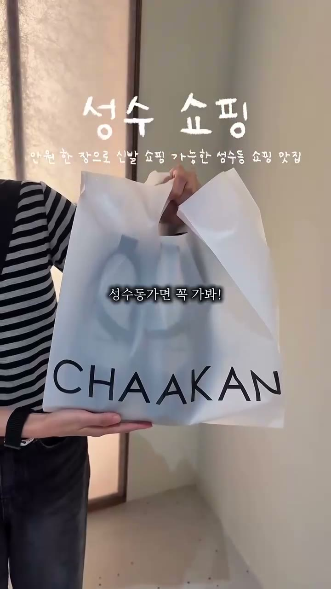
쇼핑백 마무리
화면에 꼭 보여야 하는 것- 진열대 와이드 1컷
- 쇼핑백 담는 손 클로즈업
- 거울 앞 마지막 전신
- 쇼핑백 마무리 + 가격 자막
찍는 법진열대를 와이드로 한 번 훑고 → 쇼핑백에 담는 손 클로즈업 → 거울 앞 마지막 전신 → 쇼핑백을 든 채 가격 자막과 함께 마무리.
핸드헬드 · 와이드→손 클로즈업→전신→아웃 · 매장
자막 (예시)예) "성수 갈 때 여기 저장해" · "위치랑 혜택은 캡션 확인" · 75,900원(가격은 클로징에서만, 실제 굽·가격 수치로 교체)
절대 찍지 말 것
- 외관만 3초 이상 잡기
- 한산한 매장처럼 보이는 컷 · 지저분한 거울 노출
- 정리 안 된 매대·재고박스 노출
- 다른 매장·카페를 섞는 코스형 구성 (착한구두 분량이 묻히는 구성 금지)
- 브랜드 로고만 크게 잡기 · 타 브랜드 로고·제품 동시 노출
- 초대형·국내최대·평수 주장 등 과장된 규모 표현
- 직원 정면 손인사 컷
- 지난 이벤트 입간판 노출
- 착화 컷 없이 "신으면 더 예쁘다"류 자막만 쓰기
- 첫 컷을 간판 단독 또는 언박싱으로 시작
- 촬영 중 옷 갈아입기 — 착장은 처음부터 끝까지 그대로, 부츠만 바뀝니다
- 몸매·다리라인을 강조하는 문구
- 씬 하나가 1.5초를 넘는 정지 컷
🎙 나레이션 (예시)
브랜드 규격상 영상에 음성(직접 말하는 내레이션) + 자막을 함께 넣어야 합니다. 아래 8줄을 그대로 말하거나 참고해 자연스럽게 각색해 주세요. 억양은 자연스럽게, 가격은 화면의 가격 자막과 함께 말해 주세요. (브랜드명은 대문자 CHAAKAN)
아래 문장은 예시입니다. 톤·표현은 보배님 말투로 자유롭게 바꾸시고, 가격·굽 수치만 화면과 맞춰 주세요.
| 구간 | 대사 |
|---|
| 훅 · 도입 | "성수에서 진짜 예쁜 부츠 쇼룸 찾았어" |
| 훅 · 도입 | "여기 부츠 다 예쁜데 신어보니까 더 좋아" |
| 매장 · 브랜드 | "여기 착한구두 성수점인데 매장부터 예뻐" |
| 매장 · 브랜드 | "부츠 하나로 길이를 세 가지로 바꿀 수 있어" |
| 제품 | "이거 한 켤레로 길이가 세 개야" |
| 제품 | "통굽인데 굽 3cm라 하루 종일 편해" |
| 마무리 | "성수 갈 때 여기 저장해" |
| 마무리 | "위치랑 혜택은 캡션 확인" |
편집 · 업로드 (참고사항)
아래는 참고사항입니다. 업로드일(10/12)과 게시물 정보 제공만 지켜 주세요.
| 항목 | 권장 |
|---|
| 길이 | 36초 안팎 권장 |
| 컷당 길이 | 1~1.5초 권장 · 원본 보기 |
| 비율 · 화질 | 9:16 · 1080p 권장 |
| 자막 | 가능하면 첫 프레임부터, 화면 하단 1/3 피해서 권장 (릴 UI가 가림) |
| 음성 | 내레이션 + 자막 함께 권장 |
| 일정 | 내용 |
|---|
| 9/10 | 가이드 전달 |
| 9/15 | 초안 공유 |
| 9/18 | 최종 컨펌 |
| 9/28–10/2 | 촬영 (매장 오픈 전 시간대, 사전 협의) |
| 10/12 | 업로드 |
| 업로드 +2일 | 게시물 정보 제공 — 아래 참조 |
| 업로드 +7일 | 게시물 정보 제공 — 아래 참조 |
| 업로드 +14일 | 게시물 정보 제공 — 아래 참조 |
게시물 정보 제공 (필수)
| 시점 | 제공 항목 |
|---|
| 업로드 +2일 | - 릴 링크
- 조회수 · 도달 · 계정 도달
- 좋아요 · 댓글 · 저장 · 공유 · 팔로우 증가
|
| 업로드 +7일 | - 시청 유지(리텐션) 그래프 = 이탈률 (어느 초에 빠지는지)
- 평균 시청 시간 · 재생 완료율
- 유입 경로 (홈 / 탐색 / 릴스 / 프로필)
|
| 업로드 +14일 | |
제공 방법인스타그램 앱 → 릴 → 인사이트에서 "개요" 화면과 "시청 유지" 그래프 화면 스크린샷 2장을 그대로 보내 주시고, 위 수치들을 화면에 나온 그대로 함께 전달해 주시면 됩니다.
이 정보를 부탁드리는 이유
이 영상이 어느 장면에서 잘 붙고 어디에서 빠지는지 보고, 다음 협업 때 더 잘 맞는 기획과 컷을 드리기 위한 참고 자료입니다. 평가나 정산 조건이 아니고, 외부에 공유되지 않습니다.
제품 · 매장 정보
제품 — 부츠 5종 중 보배님 선택 3종
- 블래티 스트랩 부츠 · 85,900원
- 페탈 커스텀 멀티웨이 롱부츠 · 75,900원
- 제퍼 부츠 · 79,900원
- 렉터 부츠 · 85,900원
- 카더 부츠 · 49,900원
촬영 협의 시 3종 확정. 옷 갈아입기 없이 한 벌로 통일, 부츠만 바꿔 신습니다.
매장- 성수 플래그십 서울 성동구 성수이로 58
- 오픈 전 촬영 협의 (탈의실·거울 구역 필요)
소구점- 부츠 하나로 무드·길이가 변형된다
- 통굽인데 편하다 (굽 3cm)
- 매장에서 직접 신어본다
해시태그 · 계정 태그@chaakan_official · #착한구두 · #CHAAKAN · #26AUTUMN
참고 영상
| 항목 | 무엇을 볼지 | 원본 |
|---|
| 참고 영상 1 | 매장 소개 흐름·페이싱 참고 | 원본 보기 |
| 참고 영상 2 | 신발·매장·컷 흐름 참고 | 원본 보기 |
| 보배님 게시물 | 착장 자세 참고 (앉아서 다리 접고 부츠 앞으로) | 보배님 게시물 |